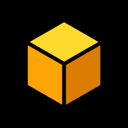

DeDustio

| Общая информация | |
|---|---|
| Тип: | Децентрализованная биржа (DEX) |
| Блокчейн: | TON |
| Протокол: | DeDust Protocol 2.0 |
| Статус: | АКТИВЕН |
| Технические детали | |
| Тип пулов: |
|
| Поддержка активов: |
|
| Ресурсы | |
| Сайт: | dedust.io |
| Документация: | SDK Docs |
| GitHub: | dedust-io |
| Telegram: | @dedust |
| Аналитика: | GeckoTerminal |
Содержание
1. Обзор
1.1. Протокол DeDust 2.0
DeDust использует протокол второго поколения (V2), который позволяет создавать торговые пары между любыми активами, включая стейблкоины. В отличие от протоколов первого поколения, где все пары обязательно включают нативную монету, DeDust обеспечивает большую гибкость в создании торговых пар.
1.2. Особенности и преимущества
- Поддержка различных типов пулов (Volatile и Stable-Swap)
- Интеграция с основными TON-кошельками
- Автоматический маркет-мейкинг (AMM)
- Возможность создания пользовательских пулов ликвидности
2. Ликвидность
2.1. Провайдеры ликвидности
При внесении торговой пары в пул, провайдеры получают LP-токены (Liquidity Provider токены). Каждый LP-токен представляет долю в пуле и со временем увеличивает свою ценность за счет комиссий от торговли.
Формула доходности:
Провайдеры ликвидности получают 0.5% от каждой сделки. Индивидуальный доход зависит от доли в пуле.
Пример: При доле в пуле 20%, провайдер получает 0.1% от всех комиссий биржи.
2.2. Price Impact и Slippage
Важно понимать разницу:
- Price Impact — процент активов, который вы недополучите в результате сделки из-за размера транзакции относительно пула
- Slippage — допустимое отклонение цены в момент исполнения транзакции
3. Технические аспекты
3.1. Поддерживаемые кошельки
- Tonkeeper — наиболее популярный кошелек с поддержкой NFT и встроенным браузером
- Tonhub — включает встроенный стейкинг и управление LP-токенами
- MyTonWallet — поддержка TON DNS и TON Proxy
- JUSTON — встроенная интеграция с DeDust
- OpenMask — браузерное расширение для доступа к dApps
3.2. Обернутые токены
DeDust использует JTON (обернутый TON) для обеспечения работы протокола V2. Это позволяет создавать торговые пары между любыми активами без обязательной привязки к нативному TON.
3.3. Стейблкоины
Стейблкоины — это криптовалюты, цена которых привязана к стоимости определенного актива, например, доллара США. В сети TON стейблкоины представлены в виде Jetton-токенов.
Особенности стейблкоинов на DeDust:
- Позволяют защититься от волатильности рынка
- Обеспечивают быстрые международные переводы
- Интегрируются через мост RSquad
- Ожидается поддержка TON Trustless Bridge в Q3
4. Практическое использование
4.1. Расчет прибыли в пулах ликвидности
Пример расчета:
Если у вас в пуле 1000 TON и 500 SCALE:
- 1 SCALE = 500 / 1000 = 2 TON
- Чем больше TON в соотношении монет в пуле, тем стабильнее цена
- Сложнее осуществлять резкие изменения цены (pump и dump)
4.2. Особенности торговли
Рекомендации по торговле:
- При установке Slippage >5%, будьте готовы к значительным отклонениям от ожидаемой суммы
- Expert Mode позволяет совершать сделки с Price Impact более 15%
- Slippage рассчитывается от суммы с учетом Price Impact
5. Безопасность и риски
5.1. Защита от рагпулов
Рагпул (rugpull) — вид мошенничества, когда создатели токена продают все монеты, резко обрушивая курс. Для защиты рекомендуется:
- Исследовать происхождение токена
- Изучать проект и его ценность
- Использовать риск-менеджмент
- Проверять токеномику проекта
5.2. Рекомендации по безопасности
Основные правила:
- Используйте только проверенные кошельки с официального сайта ton.org/wallets
- Проверяйте адреса контрактов через надежные источники
- Не забывайте про seed-фразу, она совместима со всеми TON-кошельками
- Внимательно проверяйте параметры транзакций перед подтверждением
7. Технология и инфраструктура
7.1. Валидаторы и номинаторы
В основе работы DeDust, как и всей сети TON, лежит механизм Proof-of-Stake, где ключевую роль играют:
- Валидаторы:
- Проверяют транзакции и создают новые блоки
- Блокируют токены в качестве залога (стейкинг)
- Получают вознаграждение за поддержание сети
- Могут быть оштрафованы за нарушение правил
- Номинаторы:
- Поддерживают валидаторов своими токенами
- Получают часть вознаграждения валидаторов
- Помогают обеспечивать децентрализацию сети
7.2. Ноды блокчейна
Основные функции нод:
- Верификация транзакций
- Хранение данных блокчейна
- Участие в консенсусе
- Обеспечение сетевой безопасности
- Участие в голосовании и управлении сетью
8. Особенности работы DEX
8.1. Сравнение с CEX
Централизованные биржи (CEX):
- Работают через посредника
- Используют книгу ордеров (orderbook)
- Требуют KYC/AML
Децентрализованные биржи (DEX):
- Работают на смарт-контрактах
- Используют AMM (Automated Market Making)
- Не требуют верификации личности
8.2. Протоколы DEX
V1 протокол:
- Все пары включают нативную монету
- Зависимость от цены базового актива
- Используется в Tegro.Finance и TonSwap
V2 протокол (DeDust):
- Поддержка любых торговых пар
- Использование обернутых токенов (JTON)
- Большая гибкость в создании пулов
8.3. Работа с токенами
Создание и управление Jetton'ами:
- Использование minter.ton.org для базового создания
- Возможность кастомизации под конкретные задачи
- Важность проработанной токеномики
Рекомендации по созданию токенов:
- Изучение рынка и конкурентов
- Продуманная токеномика всей эмиссии
- Определение ценности токена на рынке
- Обеспечение достаточной ликвидности
9. Детальная механика LP-токенов
9.1. Принцип работы LP-токенов
LP-токены (Liquidity Provider токены) — это цифровые активы, которые пользователи получают в обмен на предоставление ликвидности в пул. Каждый LP-токен представляет пропорциональную долю в пуле ликвидности.
Основные характеристики:
- Автоматически генерируются при внесении ликвидности
- Представляют право на долю в пуле и комиссиях
- Могут быть переданы другим пользователям
- При выводе сжигаются в обмен на базовые активы
Пример расчета доходности:
При обороте пула в 100,000 TON в день:
- Комиссия пула (0.5%): 500 TON
- Ваша доля в пуле (20%): 100 TON в день
- Месячный доход: ≈3,000 TON
9.2. Факторы успешного LP
- Высокий суточный оборот торговой пары
- Значительная доля в пуле
- Длительность нахождения в пуле
- Стабильность соотношения активов
10. Обернутые токены и протоколы
10.1. Сравнение JTON, WTON и нативного TON
| Токен | Использование | Особенности |
|---|---|---|
| TON | Нативная монета блокчейна | Базовый актив для транзакций и газа |
| JTON | DeDust DEX | Оптимизирован для V2 протокола DeDust |
| WTON | Другие DEX (Megaton.Finance, STON.fi) | Стандартный wrapped-токен |
10.2. Особенности протоколов
V1 vs V2 на примере:
Возьмем токен XCOIN в пуле с 10,000 XCOIN и 1,000 TON:
- В протоколе V1:
- 10 XCOIN = 1 TON
- При падении TON на 10%, XCOIN также падает на 10%
- TVL пула падает на все 20%
- В протоколе V2:
- Цена XCOIN может быть привязана к стейблкоину
- Независимость от колебаний TON
- Более стабильный TVL
11. Подробное сравнение кошельков
11.1. Tonkeeper
- ✅ Встроенный браузер dApps
- ✅ Отображение NFT
- ✅ Интуитивный интерфейс
- ❌ Нет управления LP-токенами
11.2. Tonhub
- ✅ Встроенный стейкинг
- ✅ Управление LP-токенами
- ✅ Простой интерфейс
- ❌ Нет браузера и NFT
11.3. MyTonWallet
- ✅ TON DNS и TON Proxy
- ✅ Мультиаккаунт
- ✅ Расширенные функции
- ❌ Сложнее для новичков
12. Расчет Price Impact
12.1. Практический пример
Сценарий:
Покупка SCALE на 100 TON при цене 1 TON = 10 SCALE
Расчет:
- Ожидаемое количество: 1,000 SCALE
- Реальное получение: 800 SCALE
- Price Impact: (1000 - 800) / 1000 * 100% = 20%
⚠️ При большом Price Impact:
- Разделите крупную сделку на несколько мелких
- Дождитесь пополнения ликвидности
- Используйте другие торговые пары